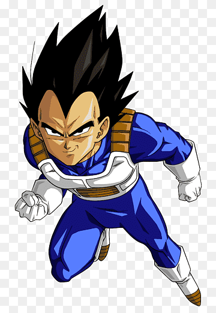

Vegeta chega ao planeta Terra como um ser arrogante e mesmo com o passar dos anos ele não perde essa característica, principalmente quando enfrenta um inimigo. Assim que descobre a verdade sobre seu planeta natal, passou a odiar Freeza devido ao abuso que sua raça sofreu em suas mãos e a destruição do Planeta Vegeta. Seu sangue real o torna extremamente orgulhoso de sua herança Saiyajin, fazendo Vegeta acreditar que são uma raça superior e bem mais poderosa que as demais. É exatamente assim que ele é introduzido em Dragon Ball Z, como um vilão impiedoso que despreza a vida daqueles que são fracos perante ao seu julgamento.
